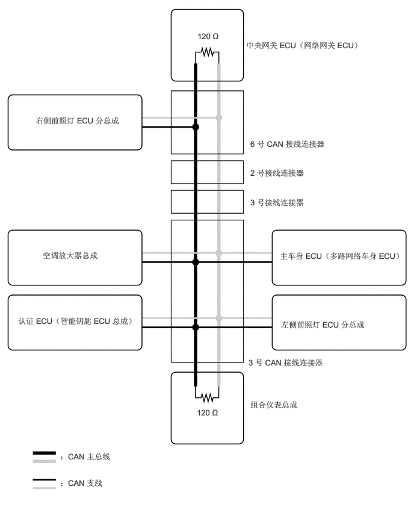

3.417,0.542 3.938,0.802
0.51,0.25
10
false
120 Ω
3.406,7.052 3.927,7.313
0.51,0.25
10
false
120 Ω
4.26,0.698 6.646,1.469
2.375,0.76
10
false
中央网关 ECU（网络网关 ECU）
4.333,2.406 6.615,2.667
2.271,0.25
10
false
6 号 CAN 接线连接器
4.333,2.906 6.448,3.302
2.104,0.385
10
false
2 号接线连接器
4.333,3.417 5.979,3.646
1.635,0.219
10
false
3 号接线连接器
0.74,4.333 2.313,4.729
1.563,0.385
10
false
空调放大器总成
0.313,5.469 2.51,6.063
2.188,0.583
10
false
认证 ECU（智能钥匙 ECU 总成）
4.844,4.344 7.167,4.969
2.313,0.615
10
false
主车身 ECU（多路网络车身 ECU）
4.865,5.531 6.979,5.833
2.104,0.292
10
false
左侧前照灯 ECU 分总成
4.302,6.188 6.375,6.427
2.063,0.229
10
false
3 号 CAN 接线连接器
4.333,6.917 6.406,7.156
2.063,0.229
10
false
组合仪表总成
1.042,7.813 2.51,8.052
1.458,0.229
10
false
：CAN 主总线
1.042,8.271 2.51,8.51
1.458,0.229
10
false
：CAN 支线
0.615,2 2.781,2.25
2.156,0.24
10
false
右侧前照灯 ECU 分总成